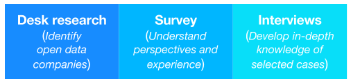

Methodology
Identifying UK open data companies
Surveying UK open data companies
Interviewing UK open data companies
Refining the list of UK open data companies
References
Our research followed a mixed-methods design and was organised in three consecutive phases -- identifying, surveying and interviewing open data companies -- as summarised in Figure 7.1 below:
 Figure 7.1: Phases of our research into UK open data companies
This blend of desk research, surveying and interviews is conducive to studying an emerging phenomenon (Hesse-Bider, 2010) -- in this case the commercial exploitation of open data. Specifically, it enabled us to gather and analyse a breadth of data covering both quantitative characteristics of UK open data companies and qualitative accounts of their perspectives and experiences.
Identifying UK open data companies
In the first phase of the study we used desk research to identify companies working with open data in the UK. Initially, we aggregated information from internal resources, such as the ODI membership and contact directories, to identify and develop a working list of candidate ‘entities’. At this stage of the research we kept a wide variety of entity types in scope including, for example, individual developers, companies not registered in the UK and charities. Analysis of publicly-available sources, such as data.gov.uk case studies, enabled us to increase this candidate list to include 739 entities.
We then conducted extensive additional desk research using open data from Companies House and the Office for National Statistics to collect specific pieces of data about each entity, such as legal company type and trading status. Using publicly accessible sources we developed our own descriptions of the entity and their open data usage. We also identified trading addresses and relevant contacts’ names and email addresses from public sources.
In order to limit our broader candidate list to valid UK open data companies we then developed and applied the following selection criteria:
- Must have a UK company number
- Must be an active company
- Must not have a dormant UK Standard Industrial Classification (SIC) code
- Must be a valid company type (Community Interest Company, Industrial and Provident Society, Limited Liability Partnership, PRI/LBG/NSC, PRI/LTD BY GUAR/NSC, Private Limited Company or Public Limited Company)
- Must not be a registered charity
Applying these criteria reduced the candidate list from 739 entities to 399 companies potentially working with open data in some capacity.
Surveying UK open data companies
In September 2014 we launched a survey to further explore how UK companies were working with open data. The survey targeted the companies on our filtered candidate list, with the exception of 15 for whom contact details were not available. This left a target group of 384 companies who we invited by email to complete the survey. This invitation was sent on 2014-09-23.
At this stage, we also made the candidate list of UK open data companies available through the ODI website, to give companies the opportunity to see the information we had collected about them and their involvement with open data, and to provide us with feedback. We sent two reminder emails at 10 day intervals, on 2014-10-03 and 2014-10-13, before closing the survey on 2014-11-01.
In creating the survey, we followed Couper (2011) to produce an instrument that addressed pertinent issues while maximising response rates among very busy professionals. The questions were informed by systematic survey of open data literature (academic, government and industry) to identify the core themes in the field, and designed to cover various aspects of commercial open data activities, such as revenue streams, pricing mechanisms, datasets used, products and services developed, and challenges related to open data reuse.
We received 77 survey responses from those companies invited to participate via email, which represents a response rate of 20%. An open call to complete the survey was also launched via the @ODIHQ Twitter account, resulting in five additional completed surveys and 82 responses in total. We then aggregated and cleansed these to remove duplicate, incomplete and/or inadequate responses, leaving 79 valid responses for analysis.
We analysed the resulting data using the ‘R’ statistics package and Google Sheets. A number of questions, primarily those involving free text answers, required a degree of re-coding. This was carried out to align, where possible, very specific free text answers with existing broader categories, in order for them to be included in the quantitative analysis. Logical inconsistencies between questions were also corrected. For example, where a respondent listed (in response to Question 10) non-government datasets they use, but failed to indicate in response to Question 9 that they use non-government datasets, we re-coded the response to Question 9 to give an affirmative answer.
For question 14 we asked companies to indicate the importance of eight different aspects of open data to their engagement. To analyse these together to look at relative importance meant we could only use companies which provided answers to all eight parts. In some cases companies answered some but not all questions. In order to maximise the analysis and include as wide a range of opinions as possible we used imputation. This entailed replacing missing values where companies had answered a majority of the parts (5, 6 or 7). The missing values were replaced by the mean of the other answers to that part so that the analysis would not be greatly affected.
Some questions with non-numeric responses required grouping similar answers into categories in order to enable meaningful analysis. For example, in questions 8 and 10, responses were grouped by data provider in order to identify how often each supplier was mentioned by companies. This involved recognising and grouping together suppliers who were mentioned in a variety of ways, for example “Ordnance Survey”, “OS” and examples of specific datasets such as “Codepoint”.
Interviewing UK open data companies
Following collection of the survey responses, we conducted follow-up interviews with 12 companies who had completed the survey. This enabled us to gain further insights into their work with open data.
We selected companies for interview from a range of industry sectors, and who play varied roles within the ecosystem. In addition, we endeavoured to select companies with innovative products and services that have the potential to grow or scale in the future. This enabled us to further explore factors which may encourage or stifle more widespread commercial reuse of open data.
The interview questions followed the themes of the survey questionnaire. However, we adopted an open ended interview format to encourage interviewees to elaborate on their work with open data. All interviews were completed either in person or via Skype and lasted between 30 and 60 minutes.
The interviews were recorded and transcribed for analysis according to the topics covered in the survey (Saldaña, 2009). New themes also emerged from these interviews, adding further insight to the survey responses. In particular, these concerned the challenges facing open data companies, including discontinuous publishing and the need for more data to be published.
The data from the interviews was used, in part, to write the UK open data company use cases and provide a snapshot of their experiences with open data.
Refining the list of UK open data companies
Following completion of the survey and interviews we re-evaluated the 399 companies included in our original candidate list to ensure there was sufficient publicly-documented evidence of their work with open data to warrant inclusion in the final list. This process resulted in the set of 270 companies you can find in the public database. Open data about these companies, sourced from Companies House, informed our analysis of the the scope and diversity of open data companies in the UK.
References
Couper, Mick P. (2011). The Future of Modes of Data Collection. Public Opinion Quarterly, 75(5): 889–908.
Hesse‐Biber, S.N. (2010). Mixed Methods Research: Merging Theory with Practice. New York: Guilford Press.
Saldaña, J. (2009). The Coding Manual for Qualitative Researchers. London: Sage.